Start
The player enters through a title screen and story introduction.
Metaverse Hackathon Game, September 2023
City Saviours was created during the Future is Green Metaverse Challenge hosted at Friedrich-Alexander-Universitat Erlangen-Nurnberg. The team won the three-day hackathon with an educational Roblox game about green everyday choices.
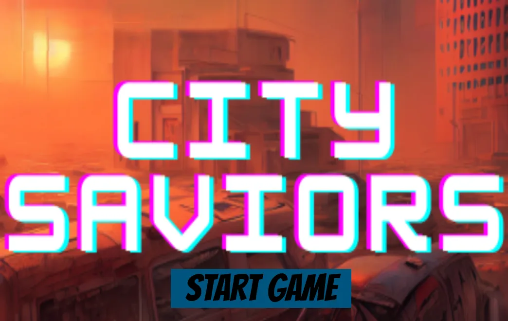
It is the year 2150. The world as we know it has come to an end. Pollution and climate change made the cities impossible to live in. Only a few people could survive the ecological catastrophe and now planet Earth is in their hands.
You are the city savior! Only you can protect it from pollution and bring it back to life. You will have to fight the carbon monsters, answer the questions about sustainability, and plant trees to save the city. Be careful, your time is limited, the Earth is heating up everyday.
Good luck, Savior! May the sustainability be with you!
The game had to teach environmental sustainability through a playable metaverse experience. The first version focused on carbon emissions, with future levels able to cover topics such as water and air pollution.
The team brainstormed and conceptualised the educational game, then built a working Roblox experience. The flow introduces the player, teaches the rules, asks sustainability questions, rewards correct answers, and turns those rewards into in-world restoration actions.
The player enters through a title screen and story introduction.
Instructions explain the basic game loop and goal.
Players walk through answer gates to solve sustainability questions.
Correct answers unlock seeds and a carrot laser gun.
Players trap carbon monsters and plant trees to revive the environment.
The available game captures show the complete loop from onboarding to combat and environmental recovery.
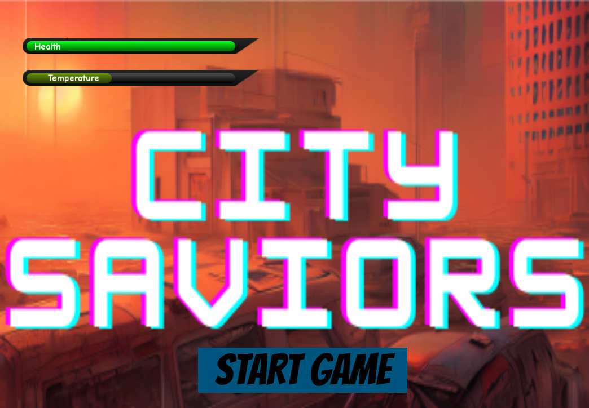
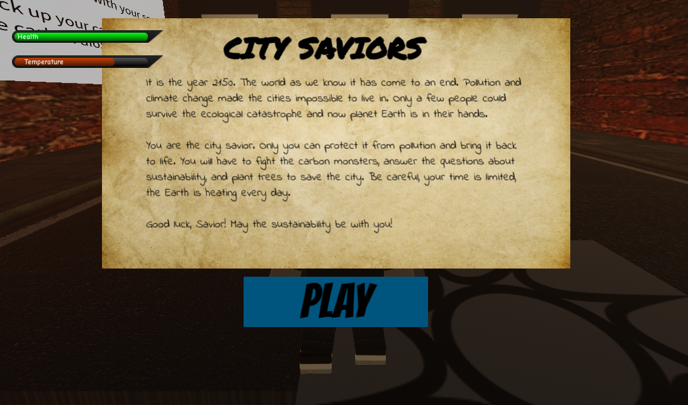
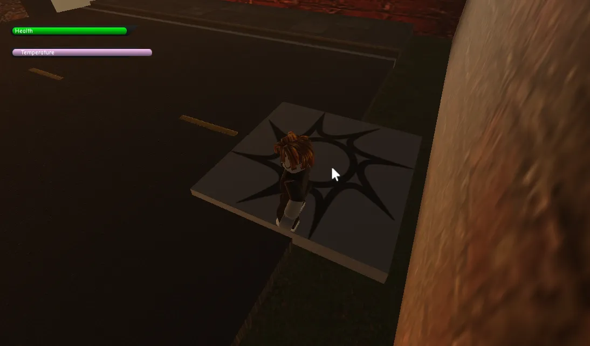
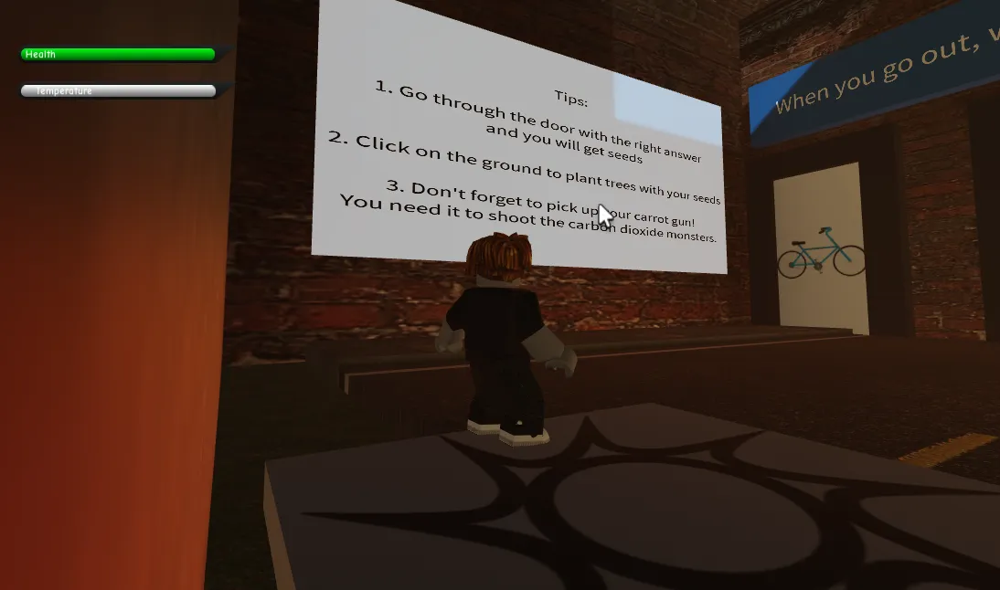
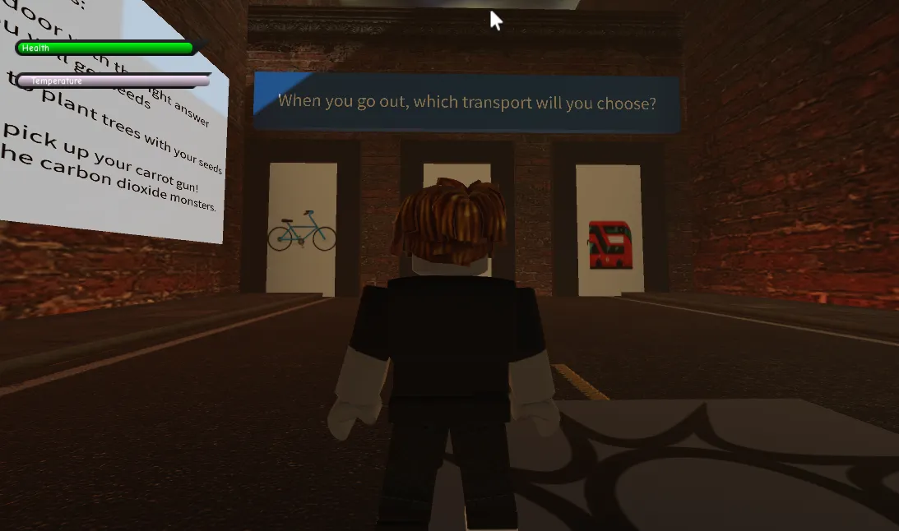
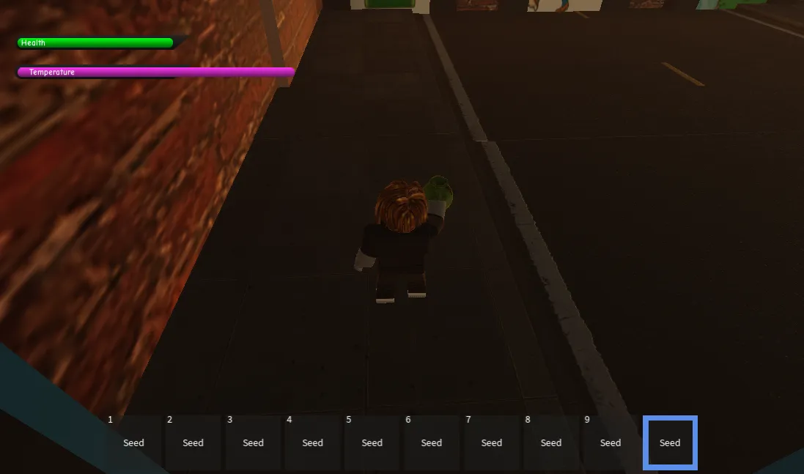
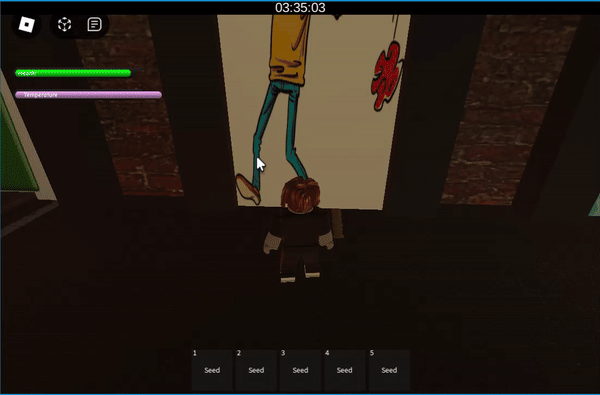
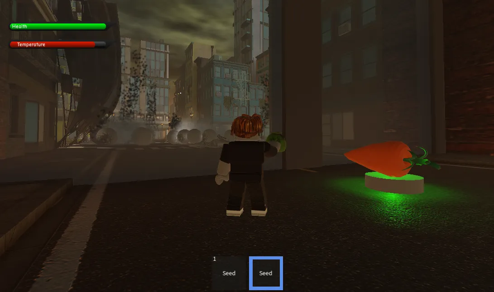
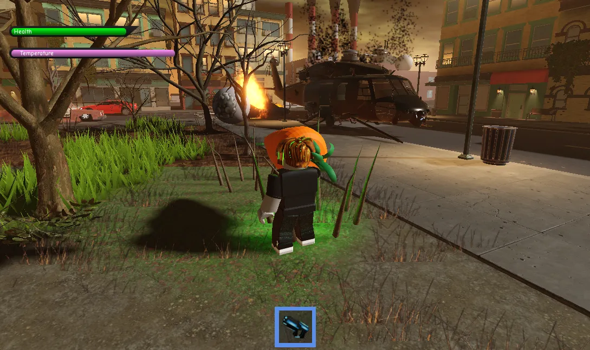
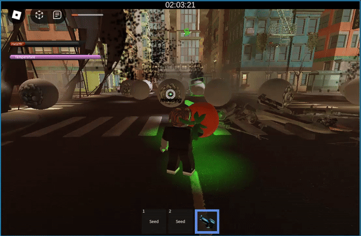
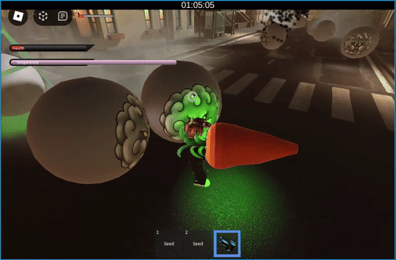
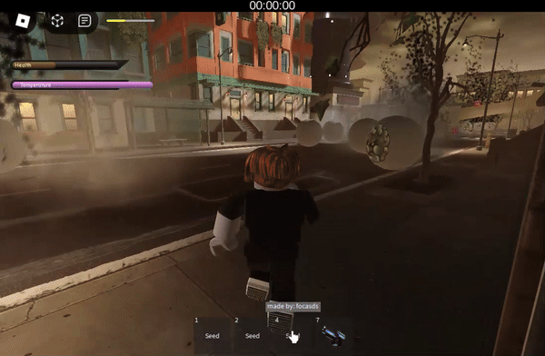
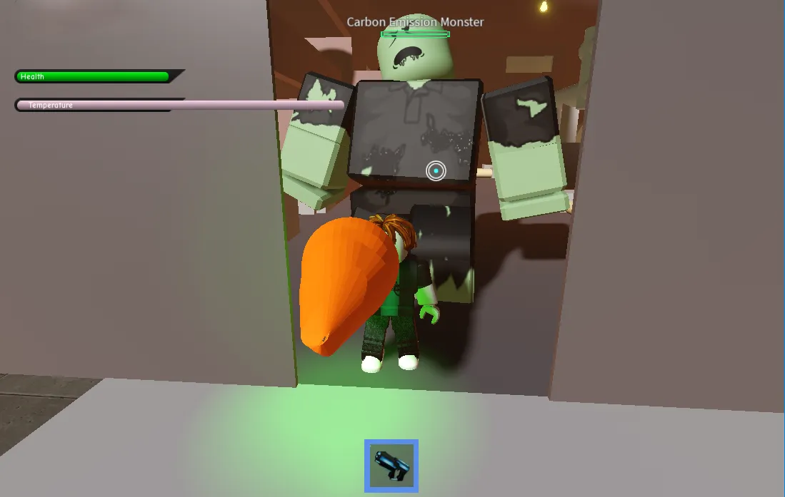
The team won the hackathon with a working Roblox game that turned sustainability education into a sequence of questions, rewards, combat, and environmental restoration.
My team was featured on the LinkedIn post by the EELISA Metaverse Community announcing us as the winners of the Challenge.
If you like what you see and want to work together, get in touch!
prathikp.prasad@gmail.com